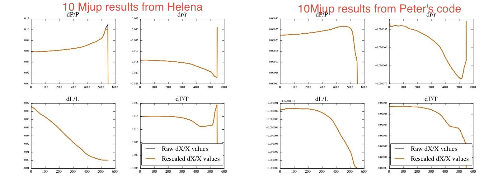

Date & Time: Aug. 8, 2012
Location: home
Computing context: MachoMac
(/Desktop/Research/CppHenyeyCode/src, /Desktop/Research/BodenheimerCode/UnalteredCode)
From last time:
Change Helena to rescale corrections in the same way.
See if that change lets Helena converge the 10Mjup model.
Not quite yet. Something is off in the way the corrections seem to be applied... Comparison between Peter's code and Helena:

Comparison of the dX/X values calculated in Helena vs.
Peter's code in the first convergence loop for the same 10Mjup
no-fusion input model.
Figure
3:
The starting dX/X profiles are different between the models, even before rescaling the corrections, so the differences aren't due to the different rescaling thresholds specified in the two codes. Need to compare the dX values between Peter's code and Helena for this 10Mjup model.
Need to write myself a python script to directly compare the X and dX and rescaling values between the two cases.
To Do Today:
Write the python script/command set to compare the X, dX, and dX/X values (both raw and rescaled) between Peter's results and Helena's:
Name of the python code: /BodenheimerCode/plot_parse_utils/compare_codes_corrections.py
For the 10Mjup case (first convergence loop)
The X values are the same, but Helena's dX values are ~1e2 to 1e3 larger than Peter's dX values
For the n=3/2 polytrope 1Msun case:
Need to create read-in values for Helena for this case.
Done.
Capture the dX_raw, dX_scaled, and X values from that
Helena Run. Done. Stored in
CppHenyeyCode/misc_debugging_records/n32_1Msun_init_corrections.txt
Plot the corrections info against Peter's values for the
same input model
(BodenheimerCode/UnalteredCode/outputs/n32_all_corrections.txt).
Done
For the first (done), second, etc. convergence
loop results from each code.
Note: Helena can't converge the n=3/2 1Msun input model, either (though to be fair, neither can the no-fusion version of Peter's code, either)
Helena starts getting dX/X values of order -1e79 after ~50 loops, though, so that's clearly off the rails
Did I *really* fix that CDE indexing mix-up?? Or did I just change something that seemed to fix it?
Test Helena by reading in the CDEG values generated by
Peter's code for an n=3/2 1Msun model, feeding those values through
Helena's Henyey/corrections solver, and comparing the corrections to
the ones that Peter's code generates for the same model.
Done, but:
need to generate hardcopies of those plots and include
them in this document. Also, need to format subplotting etc. so
that they're legible to future-me. Done. See figures
included below.
The corrections calculated in the figures below are based on the exact same CDEG and M/P/r/L/T values, which were generated by Peter's code for an n=3/2 1Msun input model with NO fusion. The fact that the two programs calculate such wildly different correction values indicates that:
Either my Henyey matrix inversion/solution method isn't working as well as I'd thought
in which case, switch Helena back to using the old gauss-jordan matrix inversion method for the 4x4 matrix inversions, and see if the two codes still disagree this much
Or, the slight discrepancies in lookup table values/process between Helena and Peter's code really are significant, and I need to dig into that hardcore.
Note: the Helena run that produced these results used lookup tables generated from Peter's code to calculate the secondary variable values (though I'm not sure table lookups ever get called during the modifiedHenyeyMatrixInversion subroutine. Check on that first thing tomorrow). If this is the issue, it's that same old problem of something about the precision of these kludged-together lookup tables not being high enough for Helena to interpolate accurately within them.
Other debugging avenues to keep in mind tomorrow:
Maybe I should try comparing input models that both codes (should) converge without fusion. Find one of the 1Msun, no-fusion, converged models?
Or, maybe I should try feeding both of them a really simple toy model (linear M/r/T/L/P relations, for example), and see how they differ in calculating the corrections to said model


Make sure to add, commit,
and push all updates to:
cdeg_debug.f,
main.cpp,
/BodenheimerCode/UnalteredCode/outputs/*.txt
and /inputs/*.txt,
/CppHenyeyCode/InitialConds/*.txt,
/CppHenyeyCode/misc_debugging_records/*.txt,
and
/BodenheimerCode/plot_parse_utils/*.py
to BitBucket tonight
before quitting!!
DONE.